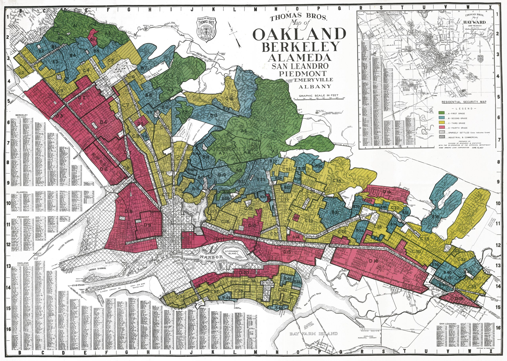
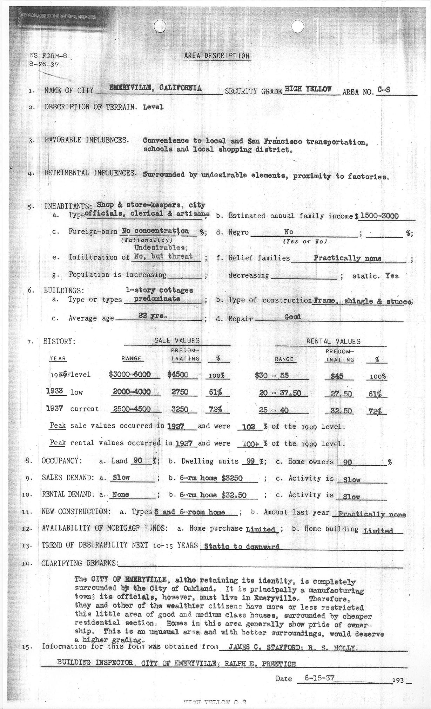
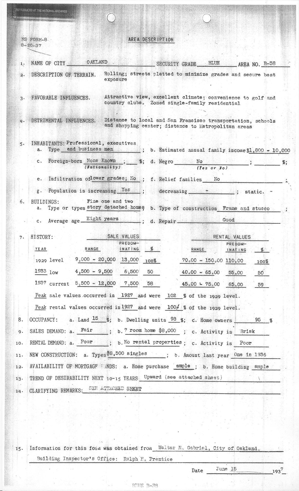
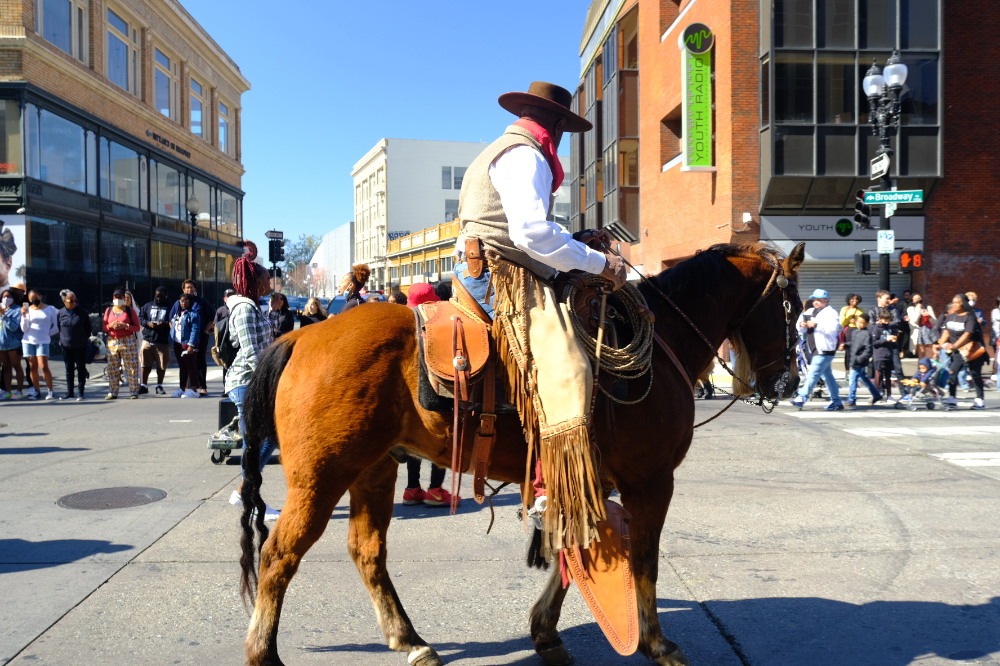
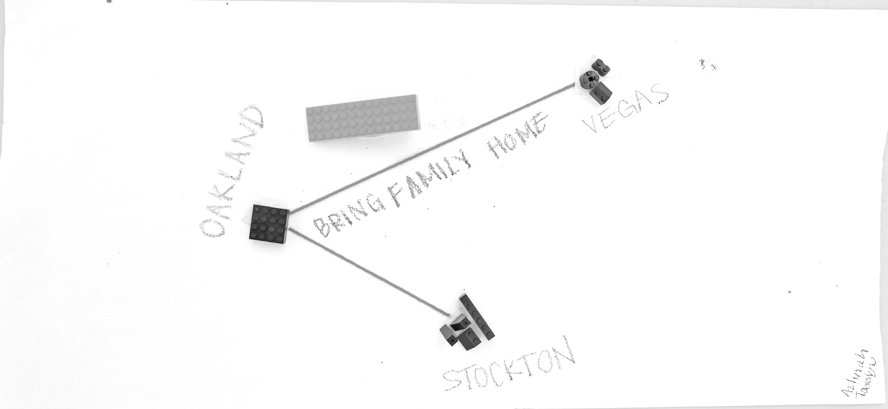
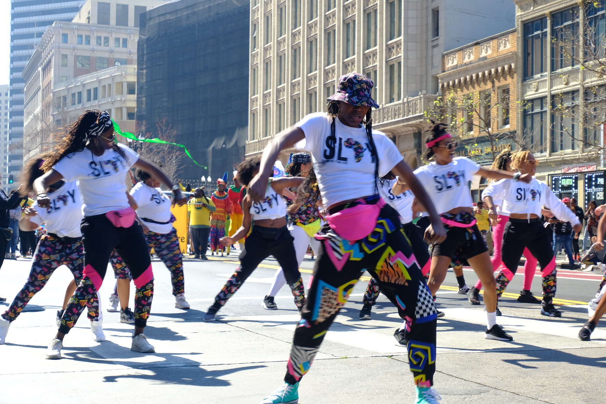
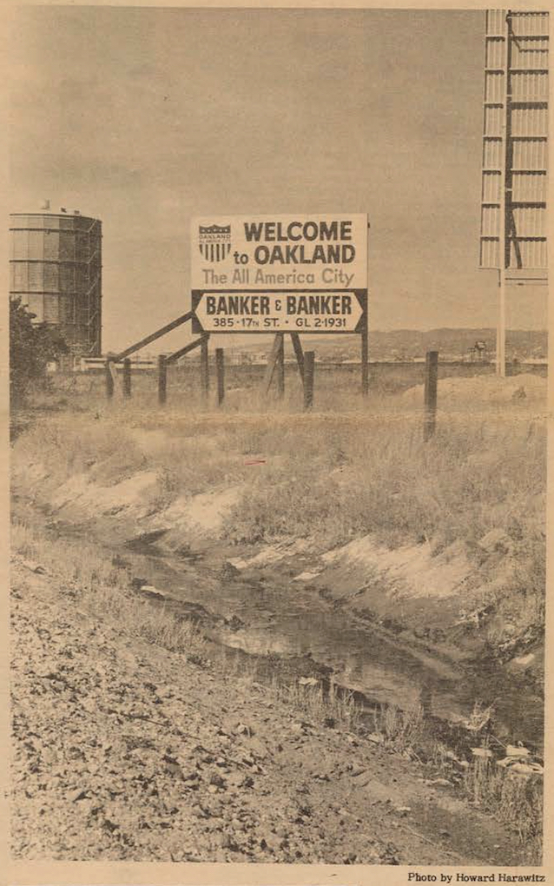
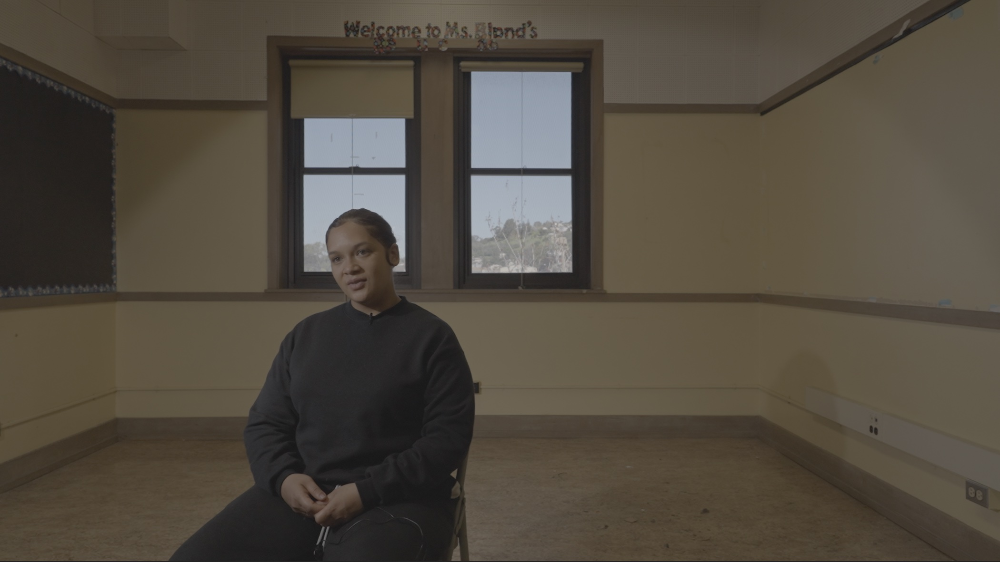

The Archive of Urban Futures is a collaborative project between Moms 4 Housing and a team of UC Berkeley researchers, led by Dr. Brandi Summers.
Organized by three themes: "The Afterlife of Urban Renewal," "The Living Archive," and "Reclaim and Remain," this project documents Black Oakland’s history and how it has changed over time, as well as efforts to produce new worlds and urban futures.
The Archive addresses questions about the right to place, memory, erasure, and community value, by focusing on the meaning of place as we cultivate ways for Black Oakland residents, both past and present, to reinsert themselves into the urban landscape from where they have been displaced.
The Archive of Urban Futures has been generously funded by a grant from the Mellon Foundation's Humanities in Place program.
If you have questions or would like to contribute to the Archive of Urban Futures, please complete the form below.
Resource Title
location
date
tag